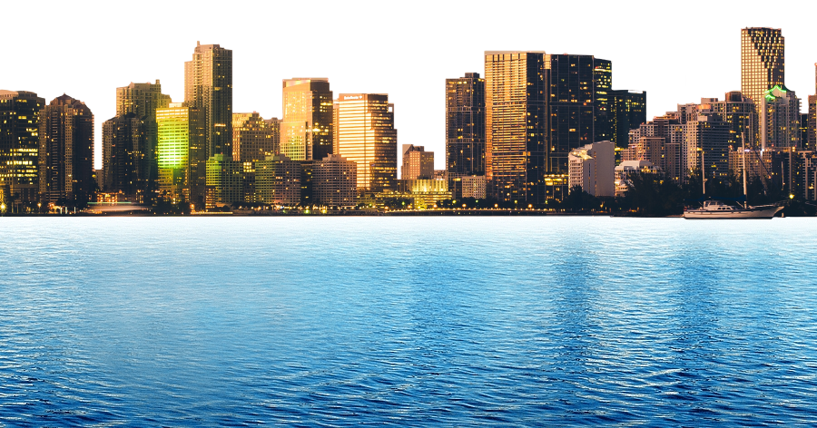
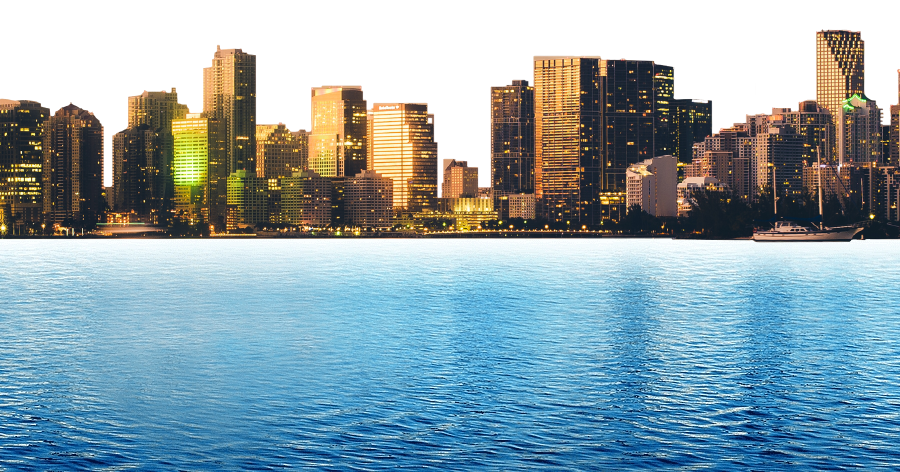
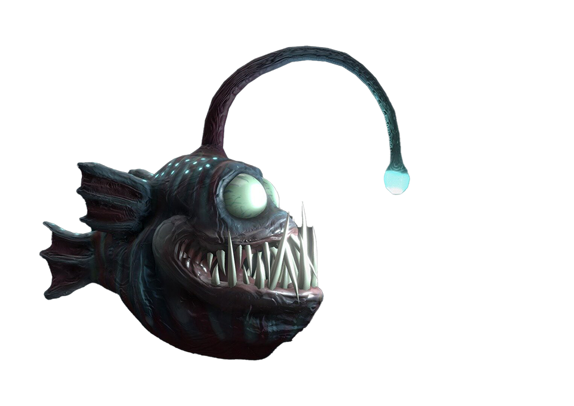

Even further still, the greatest technological feat of humankind is apparent, and the moon bears its mark -
our collective footstep.
Without all that the sea has provided, it would be impossible, and the culmination of our sea resources will
eventually spread further and further, far out through our galaxy.
Humankind have always dreamt about flying, like birds. For instance, we have historic stories from the Greek
legends Icarus and Daedalus, and Vimana in the ancient Indian epics, about humans flying. Now, some
thousands
of years later, we have succeeded with this long-lasting human dream.
Our use of sea resources has ultimately made the airplane possible. With the airplane, we can travel great
distances in a short period of time, making travels across the earth, explorations of every corner of the
world, and transporting valuable goods across continents achievable in record time.
The first ever manned flight in a motorized plane took place in December 1903, by the Wright brothers, and
ever
since, the technology have developed at an incredible speed.
The true culmination of our use of the resources of the sea is apparent to us all every day: the modern city, and all that it may include! Almost everything which makes building our modern cities' possible, whether it be energy, food to sustain a growing number of people, or minerals to build modern commodities like cars, computers, and buildings, stems from sea resources.
 

Aquatic animals are important for several reasons. The integrity of the entire ecosystem depends on the
interplay between all the different species of life we find in the sea - from coral reefs to bloodthirsty
sharks. It is key to sustain the life in the sea to sustain our own lives.
The sea is our primary source of protein, and the food the sea serves comes in all shapes and sizes - here
illustrated with a squid. The importance of seafood stretches from the pure amount of food possible to
harvest,
to the health benefits of the consumption of aquatic animals.
Deep down in the sea, there's a nuclear submarine.
The submarine is vital for the defense of land and sea areas, because of their ability to dive deep, and use
the sea almost as an invisibility cloak.
But caution is advised! The opponents are also lurking deep down in the sea.
Petroleum is the collective name which encapsules raw oil and natural gas and stands as the world's most
important source of energy. Did you know that petroleum is the residue of ancient maritime organisms, like
plants, algae, and bacteria?
The mining of petroleum is a great technological achievement, which in return has given us countless other
technological opportunities and developments. Had it not been for petroleum, our society would look
fundamentally different!
Underwater volcanos, or submarine volcanos, are underwater vents in Earth's surface from which magma can
erupt. They make up around 75 % of the yearly emission of magma on earth.
This sounds terrifying, and it surely is, but in reality they also play a vital role for us and the rest of
life on the planet. They are namely responsible of an unusual chemical cycle where mineral-rich emissions
are
emitted, and these minerals ultimately sustains life!
Transport and travel by the seaway has been the main means of intercontinental travel for several thousands
of years, and still prevails today as among the most important transportation methods, of both commodities
and
people. In fact, the oldest boat ever found is around 10 000 years old! But still, while having several
thousand years' experience travelling on the sea, sea-travel is dangerous, and even unsinkable ships may
sink.
The sea gives, and the sea takes.
RMS Titanic was a British passenger ship which sank in the North Atlantic Ocean in 1912, after striking an
iceberg during her maiden voyage from Southampton to New York City. Of the estimated 2,224 people aboard,
more
than 1,500 died, making the sinking the deadliest of a single ship in the West, at the time. The wreck of
the
RMS Titanic lies at a depth of about 3800m, about 600km south-southeast off the coast of Newfoundland.
Scroll Up
